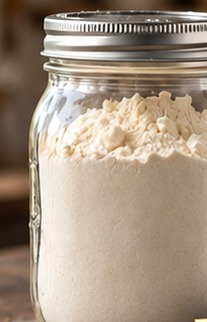

Chapter 1 · Recipe 16
Taco and Burrito Bowl Seasoning Kit
This jar is made for the nights when everyone wants to build their own bowl. The rice and seasoning are ready together, and once you add cooked meat or beans and whatever toppings are in the fridge, dinner can go straight to the table.
What’s in the Jar?
- 2 cups instant white rice
- 2 tablespoons chili powder
- 2 teaspoons ground cumin
- 2 teaspoons paprika
- 1 teaspoon garlic powder
- 1 teaspoon onion powder
- 1 teaspoon dried oregano
- 1 teaspoon kosher salt
- ½ teaspoon black pepper
- ½ teaspoon cayenne pepper
What to Add
- Cooked chicken, beef, or ground turkey
- Black beans
- Water

Real author photo (generic jar) — final: recipe-matched photography pending
Instructions
- Combine the instant rice and all seasonings in a large bowl.
- Mix thoroughly so the spices are properly mixed through the rice.
- Transfer the mix to a clean, dry, airtight container and label it.
Nutrition (per serving)
Calories: 216 kcal, Protein: 4.7g, Carbs: 51g, Fat: 1g
Storage
Keep tightly sealed in the pantry for up to 6 months. Slightly shake before using if the seasonings have settled.